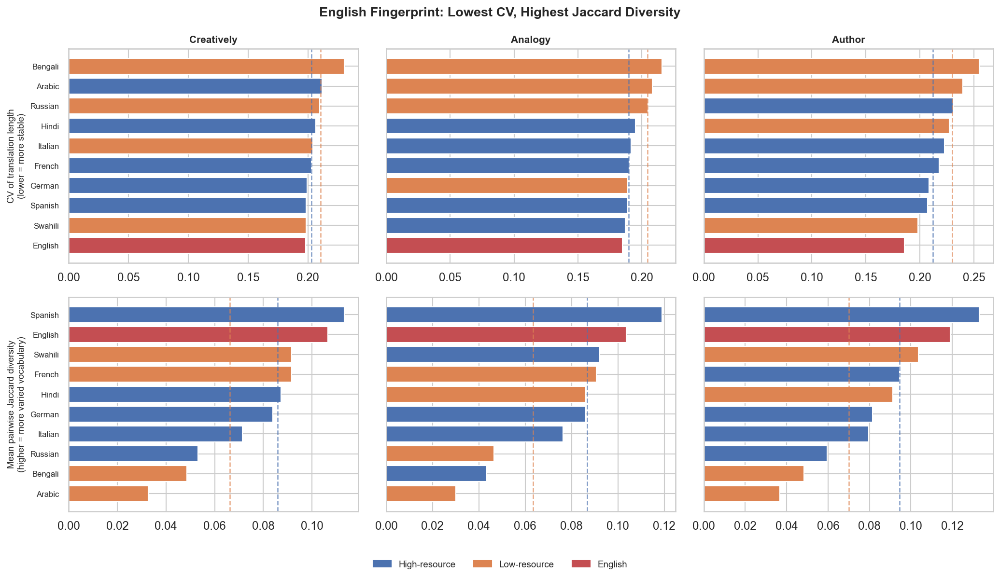
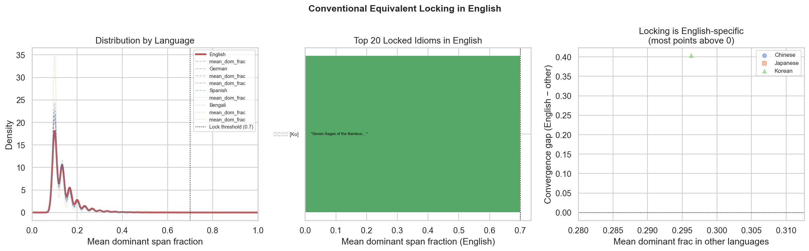
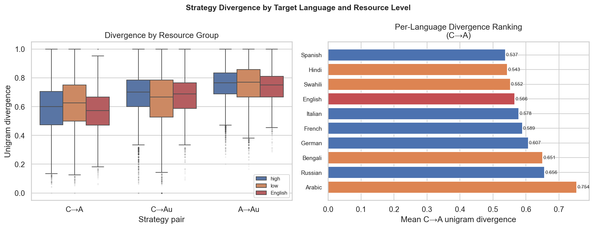
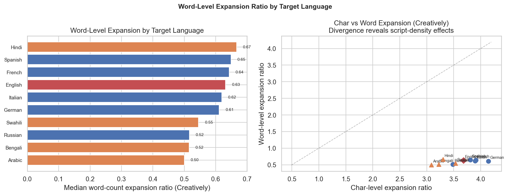
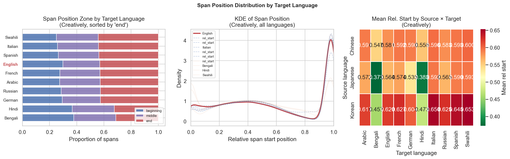
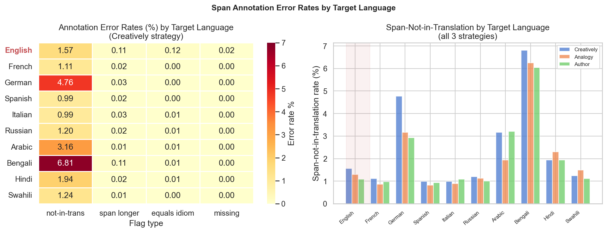
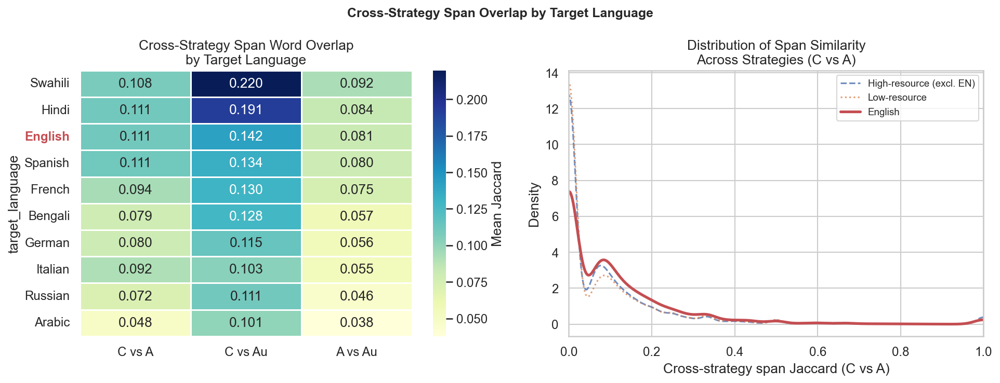
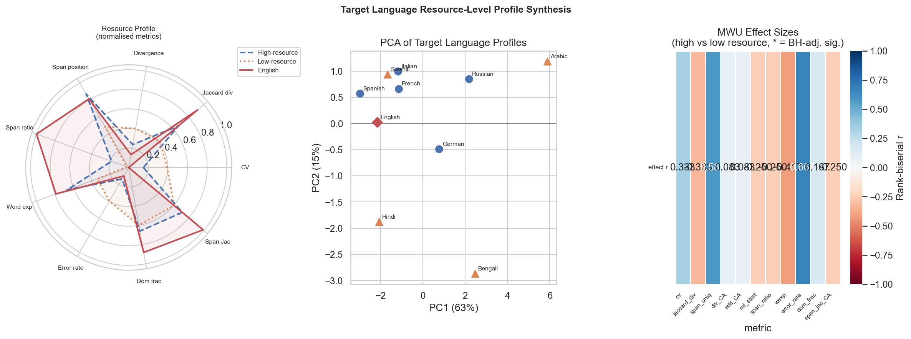

Part 7: Target-Language Profiles — English and Resource-Level Patterns¶
Parts 3–6 treat idiom translation as a property of the source idiom and the translation strategy. This part inverts the question: how does the target language shape the output, and does the resource level of the target language (high vs low amounts of training data in the backbone model) produce systematically different behaviour? For this analysis, the 10 target languages are classified into two groups based on their estimated representation in the pretraining corpus:
- High-resource: English, French, German, Spanish, Italian, Russian
- Low-resource: Arabic, Bengali, Hindi, Swahili
This is a coarse classification but a defensible one — the four low-resource languages are all underrepresented in standard large-scale pretraining corpora relative to the six European languages.
Note on span_ratio: The target-language profile matrix includes a per-language span ratio (span character length / translation character length). English returns an anomalous value of 1.14 (vs ~0.28–0.31 for all other languages), which exceeds 1.0 and is therefore impossible. This is a computation artefact in the profile aggregation step and is excluded from the discussion below; all other metrics are reliable.
Context Sensitivity and Lexical Diversity by Target Language¶
The most distinctive English fingerprint is not in length or divergence but in the combination of when the model varies and how it varies. Within-cell coefficient of variation (CV) measures how much translation length fluctuates across the 10 context sentences for a fixed (idiom, target language); mean pairwise Jaccard diversity measures how much vocabulary turns over across those 10 sentences.
| Language | Within-cell CV | Jaccard diversity | Resource |
|---|---|---|---|
| Arabic | 0.230 | 0.033 | Low |
| Russian | 0.212 | 0.053 | High |
| German | 0.207 | 0.071 | High |
| Bengali | 0.210 | 0.049 | Low |
| Italian | 0.199 | 0.084 | High |
| French | 0.203 | 0.087 | High |
| Hindi | 0.204 | 0.092 | Low |
| Swahili | 0.198 | 0.092 | Low |
| Spanish | 0.198 | 0.113 | High |
| English | 0.198 | 0.107 | High |
English ties with Swahili and Spanish for the lowest CV (0.198) — translations vary the least in length across sentences — while ranking among the highest in vocabulary turnover (Jaccard 0.107, second only to Spanish at 0.113). This combination is characteristic of a language where the model produces consistently-sized translations but chooses different words for each sentence: the elaboration budget stays constant while the wording changes freely.
Arabic shows the opposite profile: the highest length variation (CV 0.230) but the lowest Jaccard diversity (0.033). Arabic translations swing widely in size across sentences but cycle through a narrow vocabulary, suggesting the model scales the length of elaborations up and down without discovering new lexical material. Russian similarly has low Jaccard (0.053) despite moderate CV (0.212). Both languages appear to force the model into a smaller effective vocabulary, which may reflect relative scarcity of diverse idiomatic register in their training data.

Conventional Locking: Does English Stabilise on Fixed Translations?¶
A natural hypothesis is that English — as the most resource-rich target language — would most often produce a fixed, conventional English rendering of a given idiom: "fish in a barrel," "the talk of the town," "trial and error." The dominant-span fraction measures this directly: it is the fraction of the 10 sentences for which the model uses the same span to render the idiom. A score of 1.0 means identical span every time; 0.1 means all different.
| Language | Mean dominant span fraction | Resource |
|---|---|---|
| Hindi | 0.145 | Low |
| English | 0.142 | High |
| Spanish | 0.141 | High |
| Swahili | 0.138 | Low |
| Bengali | 0.138 | Low |
| Italian | 0.136 | High |
| French | 0.137 | High |
| German | 0.134 | High |
| Russian | 0.133 | High |
| Arabic | 0.122 | Low |
The expected locking advantage for English does not materialise. Mean dominant-span fraction is nearly uniform across all 10 languages (~0.12–0.14), with Hindi slightly leading English. The entire 10-language range spans only 0.023 — a negligible difference. This near-uniformity suggests the model's tendency to reuse a span across sentences is an intrinsic property of the idiom and the translation strategy, not of the target language.
The one genuine outlier is 죽림칠현 ("Seven Sages of the Bamboo Grove"), the only English-target idiom with a dominant span fraction ≥ 0.70. Its dominant span — "Seven Sages of the Bamboo Grove" — is a proper noun in English, so invariance is obligatory rather than a sign of conventional locking. The closest examples in other languages are similar: proper nouns and formulaic abbreviations, not free idiom translations that happened to converge. The conclusion is that true conventional locking, in the sense of a free idiom translation stabilising on a single English phrase across all contexts, is almost absent in this dataset: the model generates fresh vocabulary for each sentence even when a natural English equivalent exists.

Strategy Divergence Across Target Languages¶
Does the model's uncertainty about how to render an idiom — measured by Creatively–Analogy unigram divergence — depend on the target language?
| Language | Mean C–A divergence | Resource |
|---|---|---|
| Arabic | 0.754 | Low |
| Russian | 0.656 | High |
| Bengali | 0.651 | Low |
| German | 0.607 | High |
| French | 0.589 | High |
| Italian | 0.578 | High |
| English | 0.566 | High |
| Swahili | 0.552 | Low |
| Hindi | 0.543 | Low |
| Spanish | 0.537 | High |
Arabic divergence (0.754) is dramatically higher than the next-highest language (Russian, 0.656). This means that for Arabic targets, the model's Creatively and Analogy strategies produce especially different translations of the same idiom — the model has high uncertainty about how to render the idiom in Arabic and resolves that uncertainty differently depending on which strategy prompt it receives. The fact that Arabic is also the language with the lowest Jaccard diversity (see above) creates an apparent paradox: Arabic translations have low vocabulary turnover across sentences (the model cycles through a small vocabulary) yet high divergence across strategies (the model finds very different small vocabularies for different prompts). This pattern is consistent with a model that is "stuck" in a narrow Arabic register for any given prompt but has multiple such narrow registers available.
Spanish and Hindi have the lowest divergence (0.537 and 0.543), suggesting the model reaches for similar renderings regardless of strategy in these languages — meaning may be transparent enough that strategy prompt matters little. There is no clean high-vs-low resource split: Russian (high) has the second-highest divergence, while Hindi and Swahili (both low) have the lowest. Resource level is not the primary driver of strategy divergence.

Word-Level Expansion Ratio by Target Language¶
Character-level expansion ratios (translation chars / source chars) are dominated by script density differences: Arabic and Bengali compress more information per character than Latin-script languages, inflating apparent character ratios for the latter. A more linguistically meaningful measure is the word-level expansion ratio: translation word count / source character count, which removes the script-density confound.
| Language | Mean word expansion ratio | Resource |
|---|---|---|
| Hindi | 0.667 | Low |
| Spanish | 0.649 | High |
| French | 0.643 | High |
| English | 0.632 | High |
| Italian | 0.619 | High |
| German | 0.611 | High |
| Swahili | 0.545 | Low |
| Russian | 0.516 | High |
| Bengali | 0.515 | Low |
| Arabic | 0.500 | Low |
This ranking reverses the character-level intuition for Arabic and Bengali, which now rank at the bottom. Hindi, by contrast, moves to the top: Hindi translations contain the most words per source character despite Hindi's Devanagari script. This is consistent with Hindi requiring longer verbal chains and postpositional phrases to convey the same semantic content as a short Chinese or Korean source sentence.
English at 0.632 reflects the well-known tendency of English translations to be more explicit and analytical than most other languages: idioms that encode implicit cultural context in the source must be unpacked into explicit English clauses. Swahili at 0.545 is surprisingly low for a Bantu language, possibly reflecting a narrower register of idiom-translation vocabulary in the model's Swahili training data.

Span Position by Target Language¶
The earlier finding (Part 3) that South Asian target languages place the idiomatic span earliest in the translation is one of the strongest cross-language signals in the dataset.
| Language | Mean relative span start | Resource |
|---|---|---|
| Bengali | 0.478 | Low |
| Hindi | 0.488 | Low |
| German | 0.579 | High |
| Russian | 0.589 | High |
| English | 0.586 | High |
| Arabic | 0.592 | Low |
| French | 0.596 | High |
| Spanish | 0.605 | High |
| Italian | 0.609 | High |
| Swahili | 0.612 | Low |
Bengali (0.478) and Hindi (0.488) are approximately 11 percentage points earlier than the next-closest language (German, 0.579). A relative start of 0.478 means the idiom span begins nearly in the middle of the translation rather than skewing toward the end as all other languages do. This is a typological signal: Hindi and Bengali have SOV (Subject-Object-Verb) word order, in which the main predicate comes last. A translation strategy that integrates the idiomatic rendering into the main clause would therefore front-load the idiom relative to SVO languages, where the predicate comes earlier.
The effect is amplified for Japanese source idioms: when the source is Japanese and the target is Bengali or Hindi, relative start positions drop to 0.373 and 0.383 — the idiom appears in the first third of the translation. Japanese is also an SOV language, and the model appears to preserve this structural tendency when moving between two SOV systems. For Chinese-sourced idioms (SVO source), the same Bengali/Hindi targets still place spans earlier than all other targets but with less extreme values.
Swahili's late position (0.612) is consistent with Bantu discourse structure favouring topic–comment framing in which the idiom functions as a sentence-final comment. Italian (0.609) and Spanish (0.605) reflect the tendency of Romance languages to use clause-final predicate phrases as stylistic punch-lines.

Annotation Quality by Target Language¶
The span-not-in-translation flag (annotated span is not a substring of the translation) serves as a proxy for annotation difficulty and model reliability for each target language.
| Language | Error rate (%) | Resource |
|---|---|---|
| Bengali | 6.81 | Low |
| German | 4.76 | High |
| Arabic | 3.16 | Low |
| Hindi | 1.94 | Low |
| English | 1.57 | High |
| Swahili | 1.24 | Low |
| Russian | 1.20 | High |
| French | 1.11 | High |
| Spanish | 0.99 | High |
| Italian | 0.99 | High |
Two languages stand out as anomalous:
Bengali (6.81%) has the highest error rate by a large margin. This is consistent with Bengali's script complexity (Bangla script has complex ligatures and diacritics) and the model's comparatively limited Bangla training data. Span annotation in Bengali requires the model to locate a substring in its own output — a task that becomes harder when the model is less confident about morphological boundaries. The high error rate partly explains Bengali's low Jaccard diversity (see above): many of the annotations that do survive the substring check may be imprecise.
German (4.76%) is the clear outlier among high-resource languages — more than four times the rate of French (1.11%) or Spanish (0.99%). German's compound-heavy morphology likely drives this: the model's span annotation may contain the base form of a compound while the translation contains the fully-inflected compound, producing a substring mismatch. German is the only high-resource language where the model consistently fails to annotate its own output correctly.
English (1.57%) is squarely in the middle, confirming that English annotations are reliable but not uniquely so. Spanish and Italian have the lowest error rates (0.99%), suggesting Romance morphology is most transparent for the model's annotation step.

Cross-Strategy Span Overlap¶
Beyond translation divergence, we can ask whether the spans produced by different strategies for the same sentence overlap. Cross-strategy span Jaccard is the word-set overlap between the Creatively and Analogy spans for the same (row, target language): high overlap means both strategies settle on nearly the same idiom rendering in the translation; low overlap means the span vocabularies are disjoint.
| Language | Mean span Jaccard (C–A) | Resource |
|---|---|---|
| Hindi | 0.111 | Low |
| English | 0.111 | High |
| Swahili | 0.108 | Low |
| Spanish | 0.111 | High |
| French | 0.094 | High |
| Bengali | 0.079 | Low |
| Italian | 0.092 | High |
| Russian | 0.072 | High |
| German | 0.080 | High |
| Arabic | 0.048 | Low |
Span Jaccard correlates with dominant-span fraction at ρ = 0.903 across the 10 languages — languages where the model re-uses spans across sentences also tend to use similar spans across strategies. Hindi, English, and Spanish lead this cluster at 0.111, while Arabic (0.048) and Russian (0.072) lag behind.
The Arabic result — lowest span overlap despite being the language with the most divergent full translations — is again diagnostic of Arabic's two-register behaviour: the model reaches for very different span tokens depending on whether it is in Creatively or Analogy mode, and rarely uses the same Arabic word in both spans. The strong correlation between span Jaccard and dominant-span fraction suggests a single underlying dimension of "idiom rendering stability": some languages and idioms elicit stable, recurrent renderings and others elicit fluid, strategy-sensitive ones. Arabic is consistently at the fluid end; English, Spanish, and Hindi are at the stable end.

Synthesis: Language Profiles and Resource-Level Patterns¶
PCA on the standardised nine-variable profile matrix (CV, Jaccard diversity, span uniqueness, divergence, edit distance, relative span start, word expansion, error rate, dominant span fraction) captures 63.1% of variance on PC1 and 15.2% on PC2 — most of the meaningful cross-language variation lies in two dimensions.
PC1 is a consistency–fluidity axis: languages with high Jaccard diversity, high span uniqueness, and low dominant-span fraction (more varied, less fixed renderings) load on the positive end; languages with low diversity and high error rates load on the negative end. Bengali and Arabic sit at the negative extreme (high error rate, low diversity); Spanish and English cluster at the positive extreme (low error, high diversity).
PC2 is largely driven by the span position dimension and the word expansion dimension, separating Hindi and Bengali (early spans, high word expansion for Hindi) from Swahili and Italian (late spans).
Contrary to the resource-level hypothesis, there is no clean separation of high-resource and low-resource languages in PCA space. Spanish, Hindi, and Swahili occupy similar PC1 positions despite spanning both resource classes. The clearest resource-level signal is negative: Arabic is the only low-resource language that is genuinely anomalous (extreme divergence, extreme low Jaccard, extreme low span Jaccard), while German is the only high-resource language that is anomalous (high error rate). The other eight languages form a loose cluster in which resource level does not predict much.
A Mann-Whitney U test comparing the six high-resource languages against the four low-resource ones on each profile dimension yields no significant differences after Benjamini-Hochberg correction at the α = 0.05 level — a result driven partly by the small sample size (n = 6 vs n = 4) and partly by genuine heterogeneity within each group. The data therefore support a nuanced conclusion: resource level predicts a risk of anomalous behaviour (Arabic and Bengali are clearly harder target languages) but does not define a clean high-vs-low tier in any of the translation metrics examined here. Within the high-resource group, Russian and German show divergence patterns more similar to Arabic than to English or Spanish, and within the low-resource group, Hindi and Swahili perform comparably to the European languages on most metrics.
The most consistent finding about English specifically is that it occupies a stable, central position in almost every dimension: not the longest translations, not the shortest; not the highest divergence, not the lowest; not the most context-sensitive, not the least. English is the default well-calibrated target language for this model — a reflection of its dominant role in the training corpus and instruction-tuning data. The distinctive English trait is its combination of moderate context-sensitivity with high lexical diversity: the model knows how to fill a consistent-length slot in English with genuinely varied vocabulary, rather than cycling through a narrow register or scaling elaboration length up and down without lexical renewal.
